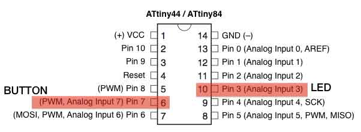
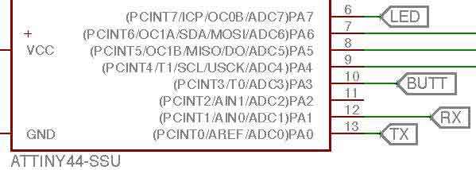
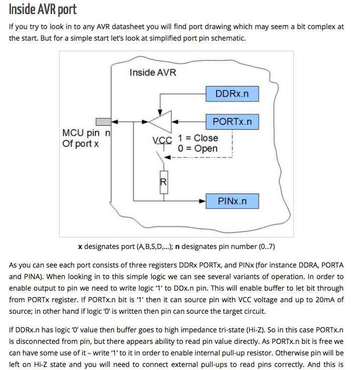
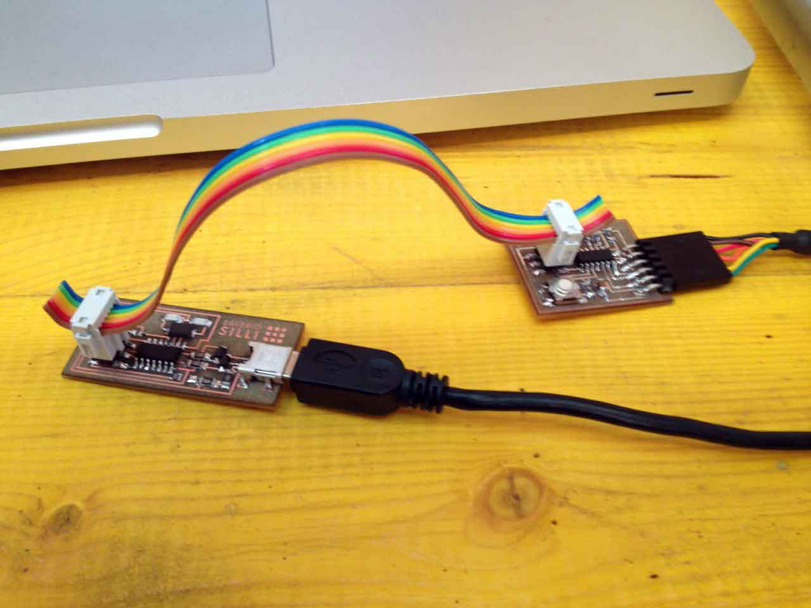
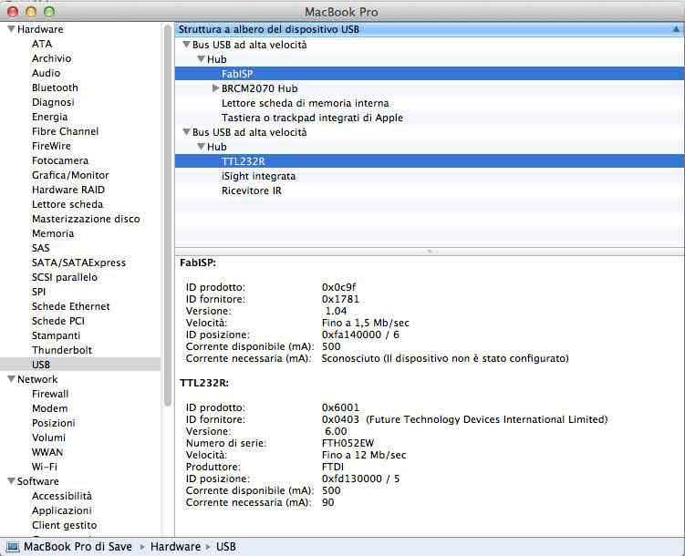
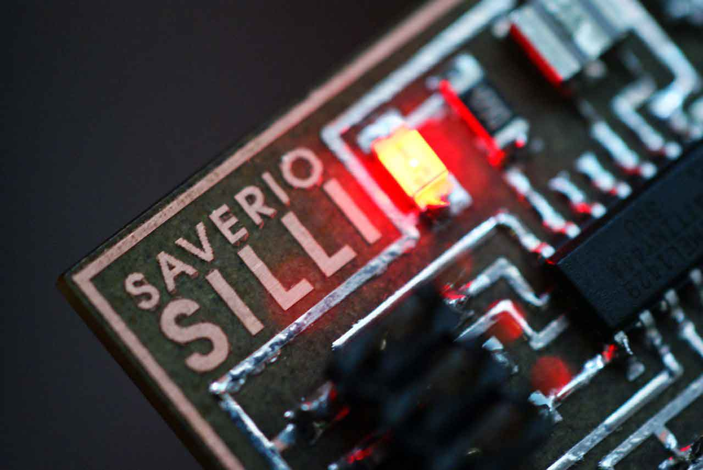

<!DOCTYPE html>
<html lang="en">
  <head>
    <meta charset="utf-8">
    <meta http-equiv="X-UA-Compatible" content="IE=edge">
    <meta name="viewport" content="width=device-width, initial-scale=1">
    <meta name="description" content="">
    <meta name="author" content="Name Surname">
    <link rel="icon" href="media/favicon.ico">

    <title>Fab Academy 2015 - Saverio Silli</title>

    <!-- Bootstrap core CSS -->
    <link href="bootstrap/css/bootstrap.min.css" rel="stylesheet">

    <!-- Custom styles for this template -->
    <link href="media/fabacademy.css" rel="stylesheet">
    <link href='http://fonts.googleapis.com/css?family=Cutive' rel='stylesheet' type='text/css'>
    <!-- 3D files viewer -->
    <script type="text/javascript" src="media/jsc3d_ie.min.js"></script>
	<script type="text/javascript" src="media/jsc3d.min.js"></script>
    <script type="text/javascript" src="media/jsc3d.webgl.js"></script>
    <script type="text/javascript" src="media/jsc3d.touch.js"></script>

    <!-- Just for debugging purposes. Don't actually copy these 2 lines! -->
    <!--[if lt IE 9]><script src="bootstrap/js/ie8-responsive-file-warning.js"></script><![endif]-->
    <script src="bootstrap/js/ie-emulation-modes-warning.js"></script>

    <!-- HTML5 shim and Respond.js for IE8 support of HTML5 elements and media queries -->
    <!--[if lt IE 9]>
      <script src="https://oss.maxcdn.com/html5shiv/3.7.2/html5shiv.min.js"></script>
      <script src="https://oss.maxcdn.com/respond/1.4.2/respond.min.js"></script>
    <![endif]-->
    
    <!-- Load the menu file -->
    <script>
	function menu() {
					  $('#exercises').load("exercises-menu.html");
					  $('#project').load("project-menu.html");
					  $('#cclicense').load("license.html");
					  }
	</script>
	  


  </head>

  <body onload="menu()">

    <!-- Static navbar -->
    <nav class="navbar navbar-default navbar-static-top">
      <div class="container">
        <div class="navbar-header">
          <button type="button" class="navbar-toggle collapsed" data-toggle="collapse" data-target="#navbar" aria-expanded="false" aria-controls="navbar">
            <span class="sr-only">Toggle navigation</span>
            <span class="icon-bar"></span>
            <span class="icon-bar"></span>
            <span class="icon-bar"></span>
          </button>
          
        </div>
        <div id="navbar" class="navbar-collapse collapse">
          <ul class="nav navbar-nav">
            <li><a href="index.html">home</a></li>
             <li class="dropdown">
              <a href="exercises-menu.html" class="dropdown-toggle" data-toggle="dropdown" role="button" aria-expanded="false">classes<span class="caret"></span></a>
              <ul id="exercises" class="dropdown-menu" role="menu">
              </ul>
            </li>
			  <li class="dropdown">
              <a href="project-menu.html" class="dropdown-toggle" data-toggle="dropdown" role="button" aria-expanded="false">project<span class="caret"></span></a>
              <ul id="project" class="dropdown-menu" role="menu">
              </ul>
            </li>
			 <li><a href="about.html">about me</a></li>
            <li><a href="contact.html">contact me</a></li>
        </ul>
        </div><!--/.nav-collapse -->
      </div>
    </nav>

    <div class="container">

	<!-- Insert your content here below! -->

      
     
    <h1>WEEK 7</h1>
		  <h2>07. Embedded Programming</h2>
		<h3><li>Read a microcontroller data sheet.</li><br>
<li>Program your board to do something.</li></h3>
        <br>
       <p>This week's assignment has been the hardest one so far: opening a window to an incredibly huge and unknown world definitely overwhelms you at the beginning. So the first thing I did was to read anything I could to figure out <b>what</b> a Microcontroller is and <b>how</b> it works. This is the fundamentals to move on to <b>how you</b> make it <b>works</b>. After I documented about the microprocessor I read the datasheet and concentrated on the position of the pins and correspondence with my board.</p>
		
		 <p class="pic">
			 <a href="image/07/image0.jpg"></a>
        
			<legend>Reading microcontroller's pin on my schematic</legend>
			 </p>
				 
			 <p class="pic">
			 <a href="image/07/image1.jpg"></a>
        
			<legend>Finding microcontroller's pin correspondence</legend>
				 </p>
		
		 <p class="pic">
			 <a href="image/07/image3.jpg"></a>
        
			<legend><a href="http://www.embedds.com/controlling-avr-io-ports-with-avr-gcc">DDR, PORT and PIN operating principle</a></legend>
				 </p>
		
		<p>As soon as possible I wanted to check if my board was alright so I downloaded a simple C program from <a href="http://fabacademy.org/archives/2012/students/menichinelli.massimo/index.html">Massimo Menichinelli's</a> page and tried to program the board via my FabISP. I only had to change the PIN number in the C program. The biggest and most annoying problem is the "check connections" error I keep getting when trying to make fuse. I always have to disconnect and connect the plugs until eventually I got it to work. This problem happens to my classmates as well, but we have no idea how to solve it.</p>
		
		 <p class="pic">
			 <a href="image/07/image8.jpg"></a>
        
			<legend>Programming via FabISP setup</legend>
				 </p>
		
		 <p class="pic">
			 <a href="image/07/image2.jpg"></a>
        
			<legend>FabISP and FTDI board as seen by my computer</legend>
				 </p>
		
		<p>This is the Terminal screen of the "make", "fuses" and "program" operations.</p>
		
		<p><pre class="prettyprint linenums">MacBook-Pro-di-Save:steadyled zaverie$ make
avr-objcopy -O ihex steadyled.out steadyled.c.hex;\
	avr-size --mcu=attiny44 --format=avr steadyled.out
AVR Memory Usage
----------------
Device: attiny44

Program:     140 bytes (3.4% Full)
(.text + .data + .bootloader)

Data:          0 bytes (0.0% Full)
(.data + .bss + .noinit)


MacBook-Pro-di-Save:steadyled zaverie$ make program-usbtiny-fuses
avr-objcopy -O ihex steadyled.out steadyled.c.hex;\
	avr-size --mcu=attiny44 --format=avr steadyled.out
AVR Memory Usage
----------------
Device: attiny44

Program:     140 bytes (3.4% Full)
(.text + .data + .bootloader)

Data:          0 bytes (0.0% Full)
(.data + .bss + .noinit)


avrdude -p t44 -P usb -c usbtiny -U lfuse:w:0x5E:m

avrdude: AVR device initialized and ready to accept instructions

Reading | ################################################## | 100% 0.00s

avrdude: Device signature = 0x1e9207
avrdude: reading input file "0x5E"
avrdude: writing lfuse (1 bytes):

Writing | ################################################## | 100% 0.00s

avrdude: 1 bytes of lfuse written
avrdude: verifying lfuse memory against 0x5E:
avrdude: load data lfuse data from input file 0x5E:
avrdude: input file 0x5E contains 1 bytes
avrdude: reading on-chip lfuse data:

Reading | ################################################## | 100% 0.00s

avrdude: verifying ...
avrdude: 1 bytes of lfuse verified

avrdude: safemode: Fuses OK (H:FF, E:DF, L:5E)

avrdude done.  Thank you.

MacBook-Pro-di-Save:steadyled zaverie$ make program-usbtiny
avr-objcopy -O ihex steadyled.out steadyled.c.hex;\
	avr-size --mcu=attiny44 --format=avr steadyled.out
AVR Memory Usage
----------------
Device: attiny44

Program:     140 bytes (3.4% Full)
(.text + .data + .bootloader)

Data:          0 bytes (0.0% Full)
(.data + .bss + .noinit)


avrdude -p t44 -P usb -c usbtiny -U flash:w:steadyled.c.hex

avrdude: AVR device initialized and ready to accept instructions

Reading | ################################################## | 100% 0.00s

avrdude: Device signature = 0x1e9207
avrdude: NOTE: "flash" memory has been specified, an erase cycle will be performed
         To disable this feature, specify the -D option.
avrdude: erasing chip
avrdude: reading input file "steadyled.c.hex"
avrdude: input file steadyled.c.hex auto detected as Intel Hex
avrdude: writing flash (140 bytes):

Writing | ################################################## | 100% 0.20s

avrdude: 140 bytes of flash written
avrdude: verifying flash memory against steadyled.c.hex:
avrdude: load data flash data from input file steadyled.c.hex:
avrdude: input file steadyled.c.hex auto detected as Intel Hex
avrdude: input file steadyled.c.hex contains 140 bytes
avrdude: reading on-chip flash data:

Reading | ################################################## | 100% 0.34s

avrdude: verifying ...
avrdude: 140 bytes of flash verified

avrdude: safemode: Fuses OK (H:FF, E:DF, L:5E)

avrdude done.  Thank you.</pre></p>
		
	
		
		<p class="pic">
			 <a href="image/07/image9.jpg"></a>
        
			<legend>And the LED lights up!</legend>
				 </p>
		
	  <p><iframe width="600" height="337" src="https://www.youtube.com/embed/QlrFf2AOdrs" frameborder="0" allowfullscreen></iframe><legend>LED is steady, button turn it off and on at every click.</legend></p><br><br><br><br>
		
	  
	  <h3>Write a program and load it on the board</h3>
		<p>After that I tried to modify the C program, but it was really too difficult to do it in a week without knowing anything about C. I tried instead working with Arduino IDE. To do so, I first installed an AVR set of information for the Arduino IDE to make it recognize my ATTiny, then tried different setup with LED blinking at different speed and button doing different operations.</p>
		
<pre class="prettyprint linenums">/*modified 8 May 2014
  by Scott Fitzgerald
  
  modified 17 March 2015
  by Saverio Silli for Fab Academy 2015 week 7 excercise
 */


// the setup function runs once when you press reset or power the board
void setup() {
  // initialize digital pin 7 as an output.
  pinMode(7, OUTPUT);
}

// the loop function runs over and over again forever
void loop() {
  digitalWrite(7, HIGH);   // turn the LED on (HIGH is the voltage level)
  delay(100);              // wait for a second
  digitalWrite(7, LOW);    // turn the LED off by making the voltage LOW
  delay(100);              // wait for a second
}</pre>

		
	<p> <iframe width="600" height="337" src="https://www.youtube.com/embed/0bVhXI_mJPI" frameborder="0" allowfullscreen></iframe><legend>Video: LED blinks, button has no use.</legend></p> <br><br><br><br>
	  
	  
	  
	  
	  
	  <pre class="prettyprint linenums">/*
  Button

 Turns off a light emitting diode(LED) connected to digital
 pin 7, when pressing a pushbutton attached to pin 3.


 
 created 2005
 by DojoDave <http://www.0j0.org>
 modified 30 Aug 2011
 by Tom Igoe
 
 modified 17 March 2015
 by Saverio Silli for Fab Academy 2015 week 7 excercise
 
 */

// constants won't change. They're used here to
// set pin numbers:
const int buttonPin = 3;     // the number of the pushbutton pin
const int ledPin =  7;      // the number of the LED pin

// variables will change:
int buttonState = 0;         // variable for reading the pushbutton status

void setup() {
  // initialize the LED pin as an output:
  pinMode(ledPin, OUTPUT);
  // initialize the pushbutton pin as an input:
  pinMode(buttonPin, INPUT);
}

void loop() {
  // read the state of the pushbutton value:
  buttonState = digitalRead(buttonPin);

  // check if the pushbutton is pressed.
  // if it is, the buttonState is HIGH:
  if (buttonState == HIGH) {
    // turn LED on:
    digitalWrite(ledPin, HIGH);
  }
  else {
    // turn LED off:
    digitalWrite(ledPin, LOW);
  }
}</pre>
		
		<p><iframe width="600" height="337" src="https://www.youtube.com/embed/jaQdx1XqqyA" frameborder="0" allowfullscreen></iframe><legend>Video: LED is steady, button turn it off when kept pressed.</legend></p> <br><br><br><br>
	  
	  
	  
	  
	  
	  
	<pre class="prettyprint linenums"> /*This sketch modify the frequency of an LED when the button is pressed.
 
Created 17 March 2015
by Saverio Silli for Fab Academy 2015 week 7 excercise
 */

int delay_value = 100;
int led_pin = 7;
int button_pin = 3;
void setup() { 
  pinMode(led_pin, OUTPUT); pinMode(button_pin, INPUT); 
}
void loop() { 
  digitalWrite(led_pin, HIGH);
  delay(delay_value);
  digitalWrite(led_pin, LOW);
  delay(delay_value);
  int button_state = digitalRead(button_pin);
  if (button_state == HIGH) { 
    delay_value = 10; 
  } else { 
    delay_value = 100; 
  } 
}</pre>
		
		<p><iframe width="600" height="337" src="https://www.youtube.com/embed/YXjgRvbqQ_0" frameborder="0" allowfullscreen></iframe> <legend>Video: LED blinks, button alternates blinking (faster/slower).</legend></p> <br>

	  
	  <p>Program files are available here:</p>
		<p><li><a href="storage/07/programs.zip">Program Files</a></li></p>


<!-- End of your content -->


    </div> <!-- /container -->

	<!-- footer -->
    
    <footer id="footer">
        <p id="cclicense">
        </p>
        <p class="license">
        Theme: <a href="https://github.com/openp2pdesign/FabAcademy_Template">Fab Academy Template</a> by <a href="http://openp2pdesign.org">Massimo Menichinelli</a> edited by <a href="http://www.facebook.com/saverio.silli">Saverio Silli</a><br>
        Based on <a href="http://getbootstrap.com/">Twitter Bootstrap</a>+<a href="http://jquery.com/">JQuery</a>+<a href="https://code.google.com/p/google-code-prettify/">google-code-prettify</a>+<a href="http://jmblog.github.io/color-themes-for-google-code-prettify/github/">GitHub theme for google-code-prettify</a>+<a href="https://code.google.com/p/jsc3d/">JSC3D</a>+<a href="https://github.com/thegrubbsian/jquery.ganttView">jquery.ganttView</a>.
        </p>
    </footer>
    

	<!-- Do not touch this! -->
    <!-- Bootstrap core JavaScript
    ================================================== -->
    <!-- Placed at the end of the document so the pages load faster -->
    <script src="media/jquery-1.9.1.min.js"></script>
    
    <!-- Syntax Highlighter -->
    <script src="https://google-code-prettify.googlecode.com/svn/loader/run_prettify.js">
    </script>
    <!-- From https://github.com/jmblog/color-themes-for-google-code-prettify -->
    <link href="media/github.css" type="text/css" rel="stylesheet">
	<script type="text/javascript">
	  !function ($) {
		$(function(){
		  window.prettyPrint && prettyPrint()   
		})
	  }(window.jQuery)
	</script>
	
    <script src="bootstrap/js/bootstrap.min.js"></script>
    <!-- IE10 viewport hack for Surface/desktop Windows 8 bug -->
    <script src="bootstrap/js/ie10-viewport-bug-workaround.js"></script>

  </body>
</html>
